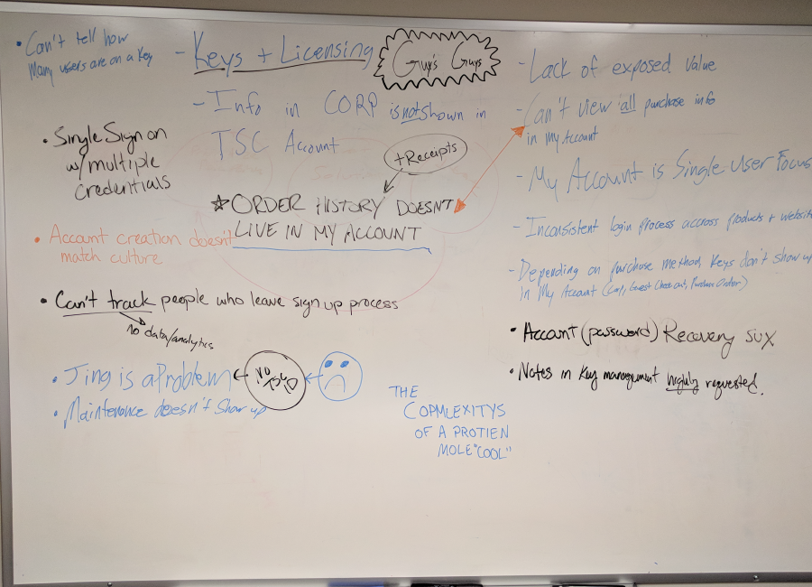
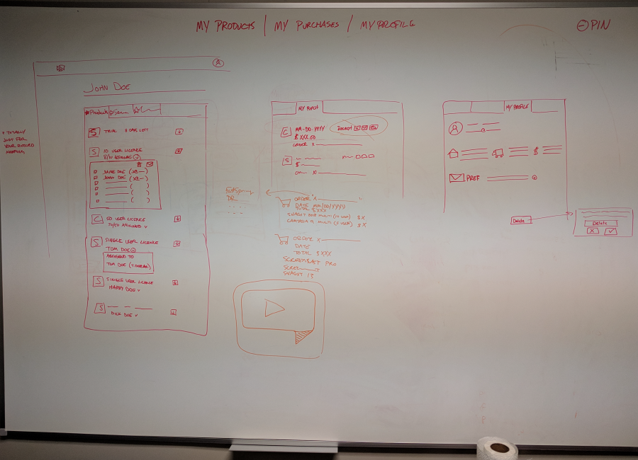

TSC Account Proposal

TechSmith ran an internal Hackathon of sorts, where leadership encouraged employees to focus on solving some existing customer pain points. I joined up with five others from various departments to talk about known problems with TechSmith Accounts. We only had about two days from start to finish. Knowing that, we began brainstorming major complaints and nuances so we could collect like things and focus on solving as much as we could with limited time and resources.

We decided to double down on getting customers to the data they often need most. We had resources on our team with insight to customer calls and tech support issues, so we used that to determine where and how to present information to the user. I drew up some low fidelity mockups on the whiteboard after taking in a lot of info and direction from the team. These mockups would be the base for the demo we constructed.

The team and I created an interactive mockup with Marvel to present as our final proposal. In the span of two days, we had collected real data based on our customers most common questions and issues and catalogued it alongside a highly detailed mockup which provided a simple answer to all of those issues. We spoke with our internal customer support teams and figure the changes we proposed could prevent hundreds of customer calls each day. The results were well received and the team is doing additional research to outline a more detailed proposal so the actual work can be done.